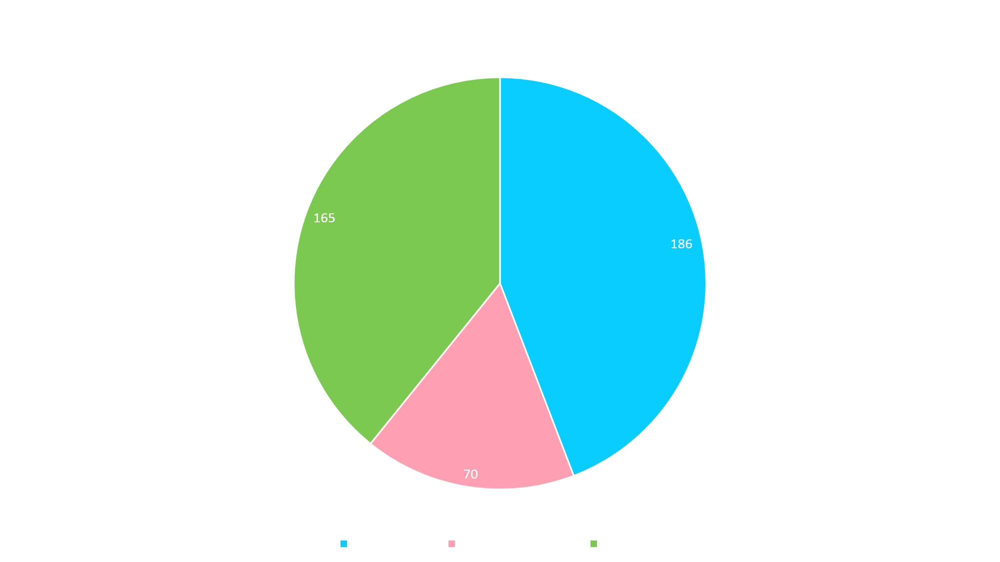

Introduction
Introduction
Energy is essential to life and all living organisms. The sun, directly or indirectly, is the source of all the energy available on Earth. Our energy choices and decisions impact Earth's natural systems in ways we may not be aware of, so it is essential that we choose our energy sources carefully.- Solar Energy
- Solar energy is radiant light and heat from the Sun that is harnessed using a range of ever-evolving technologies such as solar heating, photovoltaics, solar thermal energy, solar architecture, molten salt power plants and artificial photosynthesis.
- Wind Energy
- Wind energy is a form of solar energy. Wind energy (or wind power) describes the process by which wind is used to generate electricity. Wind turbines convert the kinetic energy in the wind into mechanical power.
- Biomass Energy
- Biomass energy is energy generated or produced by living or once-living organisms. The most common biomass materials used for energy are plants, such as corn and soy, above.
- Geothermal Energy
- Geothermal energy is heat within the earth. The word geothermal comes from the Greek words geo (earth) and therme (heat).
Types of energy sources:
Statistics of Arunachal Pradesh and Meghalaya
Arunchal Pradesh
- Solar Photovoltaic
- Arunachal Pradesh produces 1.15 MW of energy using Solar Photovoltaic energy.
- Wind Energy
- Arunachal Pradesh produces 236 MW of energy using Wind Energy.
- Hydropower Energy
- Arunachal Pradesh produces 5397 MW of energy using Hydropower Energy.
- Biomass Energy
- Arunachal Pradesh produces negligible amount of energy using Hydropower Energy.
Available of Resources in Arunachal Pradesh
Meghalaya
- Solar Photovoltaic
- Meghalaya produces 70 MW of energy using Solar Photovoltaic energy.
- Wind Energy
- Meghalaya produces 186 MW of energy using Wind Energy.
- Hydropower Energy
- Meghalaya produces negligible amount of energy using Hydropower Energy.
- Biomass Energy
- Meghalaya produces 165 MW of energy using Hydropower Energy.
Available of Resources in Meghalaya

Analytic Paragraph
Conclusion
Conclusion
Energy conservation can be as simple as turning off lights or appliances when you do not need them. You can also use energy-intensive appliances less by performing household tasks manually, such as hang-drying your clothes instead of putting them in the dryer, or washing dishes by hand.Energy needs to be conserved not only to cut costs but also to preserve the resources for longer use. As of today, most of the energy is generated from coal powered power plants. These plants do generate energy but also pollute the environment by emitting harmful gases in the atmosphere.